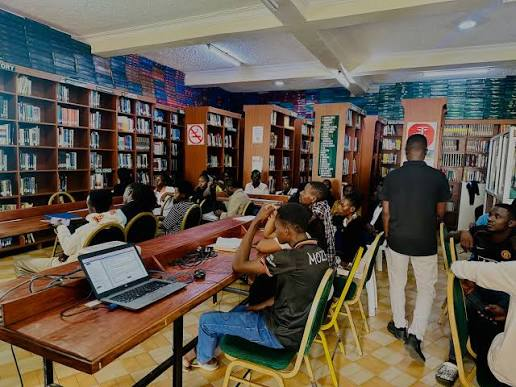

Our Campus Facilities
Take a look at the learning spaces available to our students in Mabanga.

Modern Classrooms
Spacious, ventilated classrooms designed for focused learning and interactive teaching.

Library & Study Hall
Equipped with national curriculum textbooks, encyclopedias, and quiet reading zones.

Chapel & Assembly Grounds
A dedicated space for morning worship, youth assemblies, and cultural presentations.